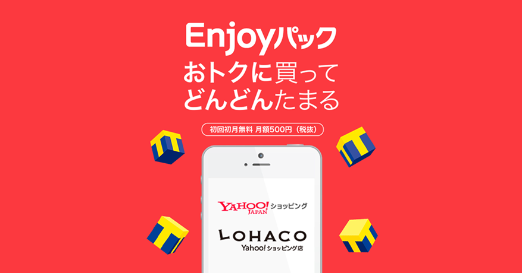
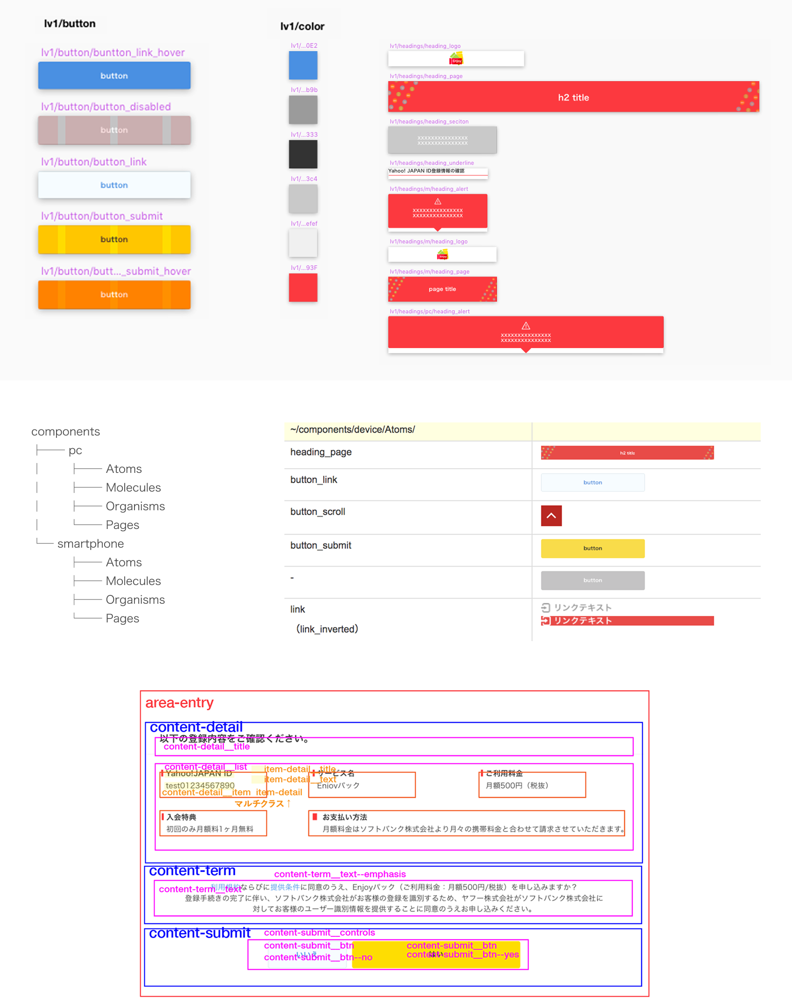

Enjoyパック リニューアル

- 概要
-
サービスリニューアルに伴うWebページ内のビジュアル作成およびページ実装を担当。デザイン作業では、Atomic Designを用いたコンポーネント設計、class名のルール策定、AbstractおよびSketchの導入を行い、制作環境のモダン化を推進した。
開発時には、Atomic Designと親和性の高いVue.jsおよびNuxt.jsを採用し、開発環境の刷新を実施。また、SPページのみだったサービスページをPC向けにも最適化した。
プロジェクト進行ではスクラムを用いて、メンバーの進捗管理やタスク管理を行い、リリースに向けた開発を推進した。
- 制作，実装，運用，プロジェクト管理
- Photoshop/ Illustrator/ sketch
- 環境：HTML/ CSS/ JavaScript
- 担当期間：2015年 12月 - 2017年 9月
- メンバー：45人（PM/エンジニア/デザイナー込み）
- URL：https://wallet.yahoo.co.jp/
- 作業内容
- コンポーネント設計：ビジュアル設計
atomic designの設計手法を用いて、Atoms / Molecules / Organisms を作成し、その後にページのデザインを実施。グルーピング参照元：http://makotottn.hatenablog.com/entry/2017/12/04/010923
- コンポーネント設計：テンプレート設計
設計したAtoms / Molecules / Organisms をもとにテンプレートの設計を実施。ページ実装の効率化を図った。
